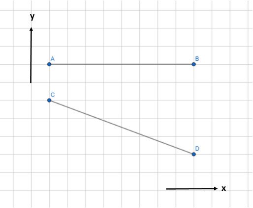
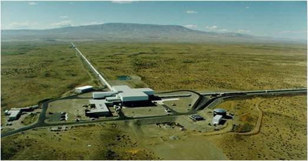
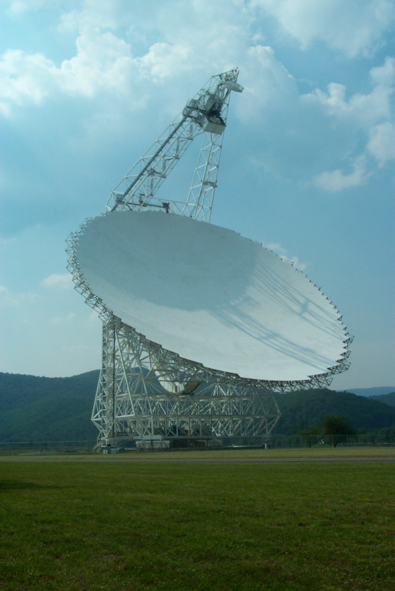

| Home |
| About |
| Blog |

| Exploring Einstein's Relativity |
7 March 2020 |

|
Figure 1. Courtesy: www.pinterest.com.au/pin/426505027182204864/ |
|
I think it’s fair to say that we’ve all heard of Albert Einstein – we’ve seen the famous picture of the genius sticking his tongue out when someone tried to take his photo. We are familiar with Einstein, the quirky guy who was super smart but got bad grades, and maybe we remember that he came up with the world’s most famous physics equation, E = mc2. But beyond that, how much do we really understand about how Einstein changed our view of the Universe? Before Einstein’s time, scientists’ understanding of physics agreed with common sense. Physicists followed Newton’s quite reasonable assumptions that time and space were constant – the same for every observer in the universe. Naturally, time doesn’t move faster or slower for some observers than it does for others, that would be ridiculous. And space is really just a giant, unmoving grid that we travel through – it doesn’t shrink or stretch or bend, right? Actually, according to Einstein, both of these pre-20th-century ideas are completely wrong – space is not a constant, motionless arena that we move through unaffected, and in fact, time can slow down for some observers. This may sound like science fiction, but these ideas have been experimentally verified, and form the basis for Einstein’s Theory of Relativity, which can be broken down into two parts – Special Relativity and General Relativity. Special Relativity describes the simpler situation of objects moving through spacetime when gravity is not present, whereas General Relativity is Einstein’s theory of gravity that explains the gravitational force as a result of the curvature of spacetime. The principles behind both Special and General Relativity have been tested over and over again by scientists for more than 100 years since Einstein published his theories in the years 1905 and 1915 respectively, and later on in this post I’ll be talking about some modern experiments that researchers are doing to use observations of exotic objects in space to further test various aspects of General Relativity. But before we get into that, let’s talk about some basic ideas of Special Relativity. The fundamental idea of relativity is that there are no privileged reference frames. In English, what does that mean? Well, if we think back to our old friend Newton’s idea of space being like a grid, we can see that his idea assumes that there is some absolute reference frame in the universe, and you can say that everything else is moving compared to that frame. In Einstein’s relativity, this is not the case – every observer moving at a constant velocity has an equal right to claim that their frame of reference is the stationary one. For example, if you are driving along in a car, and your friend on the sidewalk outside the car sees you, she will claim that you are in motion and she is at rest, but in the car, you are equally justified to say that actually, you are at rest and *she* (along with the road, the ground, etc.) is really the one moving. In addition, observers in different reference frames may not agree on measurements of time and distance. Here’s an example of a thought experiment you might try to get a handle on this strange new idea. Imagine you are sitting still on your porch, when suddenly, you are startled to see a super-speedy spaceship zoom across your field of view at a velocity that is comparable to the speed of light. As you watch that spaceship, you would notice something very strange indeed (aside from the fact that, well, it’s an alien spaceship that just took a shortcut across your lawn). The spaceship would appear squished in the direction of motion compared to how it would look if it were sitting still relative to you. And in fact, if you were to measure the length of the spaceship when it was travelling at top speed you would find that it was shorter than if you measured it while it was sitting still. Now here’s another strange observation – let’s say you were watching a high-precision clock that is sitting next to you on your porch, and you noticed the amount of time it took for the spaceship to travel from one tree (say Tree A) to another tree (Tree B) in front of your house. If, from your vantage point on the porch, you could watch the high-precision clock that the aliens had mounted on their spacecraft and make note of how long it took them to get from Tree A to Tree B according to their clock, you would see that *less time* passed for them than it did for you as you watched them. What is going on here? The explanation is a bit complicated, but quite fascinating. If we follow Einstein’s lead and consider time as another dimension, we can see that in our existence, we travel through four dimensions in total: three space dimensions, and one time dimension. Einstein’s leap of insight led him to the idea that we move through all four dimensions at a total speed equal to the speed of light. This implies that if you move faster through space, you must move slower through time – which explains why time slows down and space contracts when you move at speeds comparable with the speed of light. To understand this more clearly, think about an analogous situation in two dimensions; let’s call back our trusty alien friend with her spaceship again, and imagine she slows down a bit this time, and flies across a cornfield in what we’ll call the x-direction at 3 miles an hour (her path might look like the line from A to B in Figure 2). Then, she floats across the same field at the same speed, but in a diagonal path such that she traveled in both the x *and* y direction (following the path CD in figure 2), and you can see that she ended up traveling the same horizontal (x-direction) distance as her first trip across the field. Although the spaceship traveled the same x-distance in her second path, and floated along at the same speed, it still took longer to get to the endpoint because of the additional vertical (y-direction) component of motion. Thus, her speed in the x-direction decreased, but her speed in the y-direction increased to a nonzero value. We can apply this same reasoning to travel through spacetime; if you travel more quickly through some dimensions, you will have to move more slowly through the other dimensions to maintain a constant speed. [This explanation was inspired by a similar one from Brian Greene’s excellent book, The Elegant Universe. Check it out for more details!] |
 |
Figure 2. Diagram created using: www.geogebra.org. |
|
Having effectively overthrown Newton’s theories about space, time, and motion, Einstein then went on to dismantle his theory of gravity as well, replacing it with the new theory of General Relativity.
“I think general relativity is the most interesting theory of physics today,” says physicist and relativity researcher Dr. Maria Babiuc-Hamilton of Marshall University, who believes that further research in general relativity will shed light on some of the biggest questions in modern physics. Before Einstein, Newton assumed that gravity acts instantaneously between objects, regardless of their distance from one another. Einstein’s revelation that nothing – including information and forces – can travel faster than light led him to the realization that gravity must be transmitted at the (finite) speed of light too. Einstein also made the prediction that gravitational effects are the result of curved spacetime – objects with more mass have larger gravity, and thus they curve spacetime more. This has the effect that when multiple very massive objects orbit each other at high speeds, their motions create ripples in spacetime – or gravitational waves – which propagate out into space at the speed of light. We’ll return to the topic of gravitational waves here in just a moment. I mentioned earlier that for the past 100 years, scientists have been working to test Special and General Relativity in a variety of different ways, and so far, all of these tests have verified Einstein’s ideas. But for hundreds of years, scientists believed that Newton’s ideas about absolute reference frames and gravity were correct. Nearly all of the experiments that were performed supported Newton’s theories, until eventually, evidence appeared that showed that his theories, in fact, don’t hold in extreme situations involving super-strong gravitational fields or velocities near the speed of light. Enter Einstein, whose theory of relativity worked in those extreme cases, and seemed to solve all of the discrepancies between Newton’s theories and experimental evidence. But scientists now want to test the limits of Einstein’s theories, too, to see if there are any situations where relativity fails like Newton’s theories eventually did. They perform these tests by conducting experiments on ever-grander scales. You may have heard of LIGO (short for Laser Interferometer Gravitational-Wave Observatory), which is made up of two L-shaped instruments – one in the state of Washington, and one in Louisiana – that use lasers to measure the precise lengths of the ~2.5 mile-long tubes they are housed in. According to General Relativity, when two extremely massive objects (say two black holes) collide, energy should be released in the form of gravitational waves. Gravitational waves, as we discussed earlier, are ripples in spacetime that stretch and squash three-dimensional space as they travel through; LIGO works on the principle that these spatial distortions caused by gravitational waves should be detectable if we can measure the distance between two points on Earth accurately enough; if, following an astronomical observation of a collision between two black holes or neutron stars, we see that LIGO measures that the distances of the two arms of the instrument change following a specific pattern predicted by General Relativity at both the Washington and Louisiana sites, then we can confirm the existence of gravitational waves. |
 |
Figure 3. The LIGO station in Hanford, WA. Image source: B. Shapiro, N. Mavalvala and K. Youcef-Toumi, “Modal damping of a quadruple pendulum for advanced gravitational wave detectors,” 2012 American Control Conference (ACC), Montreal, QC, 2012, pp. 1017-1022. |
|
In 2016, LIGO did, in fact, make the first-ever detection of gravitational waves, showing that yet again, Einstein’s predictions prevailed. But that isn’t the end of the story – in fact, the discovery of gravitational waves has opened up a whole new field of astrophysics. Before 2016, we only had one way of looking at the universe beyond Earth – through the light emitted by celestial objects. Now, we can observe gravitational waves from massive objects, too. According to Babiuc-Hamilton, “Gravitational waves have a large spectrum, the same as electromagnetic [light] waves,” so we need more than one kind of observatory to detect gravitational waves with different frequencies. LIGO can detect gravitational waves with relatively high frequencies; to detect lower-frequency gravitational waves and get a broader perspective on the gravitational radiation spectrum, astronomers are turning to a new method to search for gravitational waves and further verify Einstein’s theories. This new method involves making detailed observations of pulsars (also called neutron stars); a pulsar is a super-dense, rapidly spinning remnant of a massive star that blew up in violent supernova explosion at the end of its life, and there are thousands of these objects in the Milky Way galaxy.
“Pulsars are great for testing strong gravitational fields because they are very massive, and they are also great clocks,” says pulsar expert Dr. Ryan Lynch, who works as a staff scientist at the Green Bank Observatory in Pocahontas County, West Virginia. Pulsars emit beams of radiation which can be detected using radio telescopes like the Green Bank Telescope, the world’s largest fully-steerable telescope of any kind, tucked in the Appalachian Mountains of Pocahontas County, West Virginia. Pulsars rotate at extremely high speeds, and if we are oriented in the right way relative to them, we can observe that their radio signals appear as rapidly-repeated pulses in the data. The length of the pulses is extremely consistent and predictable to a high degree of precision. The clocklike nature of pulsars makes them extremely useful to astronomers searching for gravitational waves. Lynch and many other astronomers are working on a collaborative project called NANOGrav (the North American Nanohertz Observatory for Gravitational Waves) with the goal of using measurements of several pulsars to make a detection of lower-frequency gravitational waves than is possible using LIGO. The experiment works in the following way: since spacetime stretches and bends as gravitational waves pass through, that means as the gravitational waves ripple past, the distance between Earth and the pulsars we are observing will grow and shrink. When this distance shrinks, the time it takes for the pulsars’ pulses to reach Earth also shrinks. Similarly, when the distance between the Earth and the pulsar grows, the pulses will arrive a bit later than usual. Astronomers expect that if we measure that pulsars’ pulses get delayed or come in early following a predicted pattern, that could imply that a gravitational wave has passed through and is disturbing their pulse periods. By making repeated, precise observations of a large set of pulsars, astronomers are actively seeking to verify that pulsars across the sky exhibit changes in their pulse period that agree with predictions based on General Relativity. NANOGrav scientists use the Arecibo Observatory in Puerto Rico and the Green Bank Telescope (GBT) in West Virginia to do most of their pulsar observations. “The GBT is one of the best telescopes in the world to detect pulsars,” says Lynch; its sensitivity, protection within the U.S. National Radio Quiet Zone, and capability of detecting 85% of the Northern sky make it a uniquely powerful tool for observing pulsars and performing the next generation of tests on General Relativity. In our journey from exploring the most basic ideas of Einstein’s relativity to learning about the most cutting-edge ways that scientists today are continuing to verify its validity, we’ve found that not only do we have a new way of understanding the effects of extreme speeds and strong gravitational fields, we have also discovered that Einstein’s relativity gives us a new window into the universe through the exciting lens of gravitational waves. |
 |
Figure 4. The Green Bank Telescope in Pocahontas County, West Virginia. Image source: commons.wikimedia.org/wiki/File:Green_Bank_Telescope.jpg |
|
"For all of human history, most of what we’ve learned has come from light… until recently, when we have come to detect gravitational waves. We are entering a new era,” says Lynch, “It is an exciting time to be an astronomer.”
If you would like to learn more about Einstein’s relativity, gravitational waves, and pulsars, check out these helpful resources!
Previous post: The Higgs Boson Next post: Hydrogen in Space: The Backbone of Radio Astronomy |